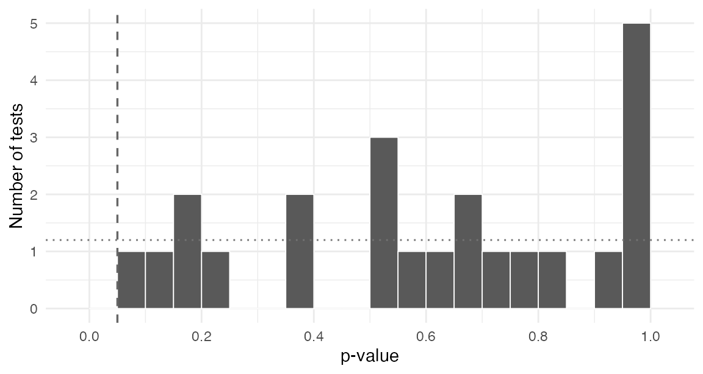
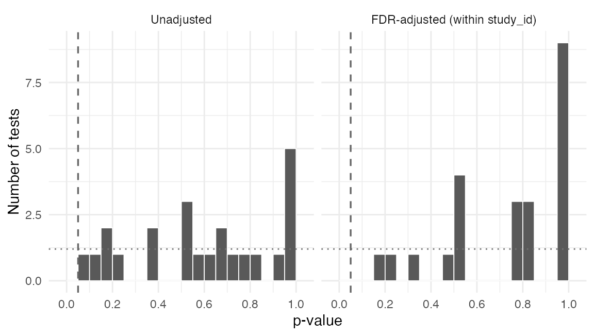

A meta-analysis or a multi-study project runs the same handful of design checks on every study it includes, and then has to make sense of several hundred test results at once. This vignette covers that second half: labelling per-study output so it can be stacked, collapsing it into one object, and reading the result without fooling yourself.
The pattern has three stages.
- One checking script per study, writing its results to disk.
-
stack_checks()to bind them into a single object. -
report_checks()and the p-value diagnostics to decide what needs attention.
Some studies to check
Real projects read cleaned data from disk. Here we simulate eight
studies that follow the column conventions the package expects: a
treatment Z, covariates prefixed X_ with
imputed _nona companions, and outcomes prefixed
Y_ scaled to the unit interval.
Two studies are given deliberate problems, so there is something to find.
set.seed(20260725)
simulate_study <- function(study_id, n = 800, imbalanced = FALSE,
attrition = FALSE, out_of_bounds = FALSE) {
X_age <- rnorm(n, 50, 15)
X_educ <- factor(sample(c("HS", "College", "Postgrad"), n, replace = TRUE))
# An imbalanced study assigns treatment as a function of a covariate
Z <- if (imbalanced) {
rbinom(n, 1, plogis((X_age - 50) / 12))
} else {
rbinom(n, 1, 0.5)
}
Y_support <- plogis(0.4 * Z + 0.02 * (X_age - 50) + rnorm(n))
Y_turnout <- plogis(0.2 * Z + rnorm(n))
# Differential attrition: the treated drop out more often
p_missing <- if (attrition) 0.05 + 0.20 * Z else 0.08
Y_support[rbinom(n, 1, p_missing) == 1] <- NA
if (out_of_bounds) Y_turnout <- Y_turnout * 100
# A covariate with missing values, plus its imputed companion
X_age[sample(n, round(0.05 * n))] <- NA
data.frame(
study_id = study_id, Z = Z,
X_age = X_age, X_age_nona = ifelse(is.na(X_age), mean(X_age, na.rm = TRUE), X_age),
X_educ = X_educ, X_educ_nona = X_educ,
Y_support = Y_support, Y_turnout = Y_turnout
)
}
studies <- c(sprintf("study_%02d", 1:8))
datasets <- lapply(studies, function(s) {
simulate_study(
s,
imbalanced = s == "study_03",
attrition = s == "study_05",
out_of_bounds = s == "study_07"
)
})
names(datasets) <- studiesOne checking script per study
In a real project each study gets its own script, so that a study’s
covariate list and quirks live next to the study rather than in a loop.
The important detail is study_id: every check takes it, and
every check appends it to its output, which is what makes the results
stackable later.
check_balance() normally returns a two-element list.
Passing flatten = TRUE returns one tibble instead, with a
test column distinguishing the joint test from the
covariate-by-covariate tests.
check_dir <- file.path(tempdir(), "checks")
dir.create(check_dir, showWarnings = FALSE)
for (s in studies) {
dat <- datasets[[s]]
nona <- c("X_age_nona", "X_educ_nona")
saveRDS(
list(
ybounds = check_y_bounds(dat, study_id = s),
missingness = check_missingness_nona(dat, study_id = s),
balance = check_balance(dat, Z, covariates = nona,
study_id = s, flatten = TRUE),
attrition = check_attrition(dat, Z, outcomes = c("Y_support", "Y_turnout"),
study_id = s)
),
file.path(check_dir, paste0(s, "_checks.rds"))
)
}
list.files(check_dir)
#> [1] "study_01_checks.rds" "study_02_checks.rds" "study_03_checks.rds"
#> [4] "study_04_checks.rds" "study_05_checks.rds" "study_06_checks.rds"
#> [7] "study_07_checks.rds" "study_08_checks.rds"When treatment was assigned within strata
Real corpora are rarely one experiment per study. A study may randomize separately within partisanship and topic, in which case a check run on the whole study answers the wrong question: it pools strata that were randomized independently.
.by runs the check within each stratum and stacks the
results, with the grouping columns prepended.
stratified <- datasets[["study_01"]]
stratified$X_region <- rep(c("North", "South"), length.out = nrow(stratified))
check_attrition(stratified, Z, outcomes = "Y_support",
.by = X_region, study_id = "study_01")
#> # A tibble: 2 × 11
#> X_region outcome F_stat df1 df2 p_value nobs n_missing status estimable
#> <chr> <chr> <dbl> <int> <int> <dbl> <int> <int> <chr> <lgl>
#> 1 North Y_support 0.136 1 398 0.713 400 30 tested TRUE
#> 2 South Y_support 1.44 1 398 0.231 400 36 tested TRUE
#> # ℹ 1 more variable: study_id <chr>The return shape is unchanged, so .by composes with
everything else: with flatten = TRUE for a single tibble,
and with check_balance()’s two-element list. Note also that
a grouping column is hidden from the check, so a stratifier named
X_region is not then tested as a covariate that happens to
be constant within every stratum.
check_balance(stratified, Z, covariates = c("X_age_nona", "X_educ_nona"),
.by = X_region, study_id = "study_01", flatten = TRUE) |>
subset(test == "joint")
#> # A tibble: 2 × 15
#> X_region test covariate level F_stat statistic df1 df2 p_value nobs
#> <chr> <chr> <chr> <chr> <dbl> <chr> <int> <int> <dbl> <int>
#> 1 North joint NA NA 0.710 F 3 396 0.546 400
#> 2 South joint NA NA 0.504 F 3 396 0.680 400
#> # ℹ 5 more variables: study_id <chr>, p_value_classical <dbl>,
#> # obs_per_param <dbl>, status <chr>, estimable <lgl>Without .by this is a nest(), a
map(), an unnest() per returned element, and a
trailing mutate() to attach study_id, because
the argument cannot survive the map(). That is worth
knowing if you maintain scripts written before .by
existed.
Stacking
stack_checks() reads every per-study file and binds it
element-wise, so the ybounds tibbles from all eight studies
become one ybounds tibble. Elements that are
NULL or have no rows in a given file are dropped before
binding, so a study that contributes nothing to one check does not break
the others.
all_checks <- stack_checks(check_dir)
names(all_checks)
#> [1] "ybounds" "missingness" "balance" "attrition"
nrow(all_checks$balance)
#> [1] 32The stacked object is a plain named list of tibbles, so anything downstream is ordinary data manipulation.
head(all_checks$ybounds, 3)
#> # A tibble: 3 × 5
#> variable min max in_bounds study_id
#> <chr> <dbl> <dbl> <lgl> <chr>
#> 1 Y_support 0.0238 0.976 TRUE study_01
#> 2 Y_turnout 0.0425 0.974 TRUE study_01
#> 3 Y_support 0.0600 0.981 TRUE study_02Triage
report_checks() applies the filters that a human would
apply by hand and returns only the rows that failed. Its print method
shows the counts.
report <- report_checks(all_checks)
report
#> excheckr triage report (alpha = 0.05)
#> 1 outcomes outside [0, 1]
#> 0 covariates missing with no imputed companion
#> 0 imputed companions that still contain NA
#> 1 joint balance tests flagged
#> 1 covariate balance tests flagged
#> 1 attrition tests flagged
#> Inspect an element with report$<name>.The three planted problems surface, and each element is a tibble you can inspect directly.
report$out_of_bounds[, c("study_id", "variable", "min", "max")]
#> # A tibble: 1 × 4
#> study_id variable min max
#> <chr> <chr> <dbl> <dbl>
#> 1 study_07 Y_turnout 5.00 96.5
report$attrition[, c("study_id", "outcome", "p_value")]
#> # A tibble: 1 × 3
#> study_id outcome p_value
#> <chr> <chr> <dbl>
#> 1 study_05 Y_support 3.57e-11One column in the stacked attrition results is worth knowing about
before the next section. An outcome that nobody skipped supports no
attrition test at all, and those rows carry
estimable = FALSE with an NA p-value rather
than a p-value of 1. That distinction matters more than it looks: a real
corpus contains many outcomes with no attrition, and reporting them as
ones would put a spike at the top of the p-value distribution and make
the diagnostics below announce a badly non-uniform collection when
nothing at all is wrong.
table(all_checks$attrition$estimable)
#>
#> FALSE TRUE
#> 8 8Reading the p-values honestly
The flagged balance tests deserve more care than the other two categories, and this is where multi-study checking most often goes wrong.
Under a valid design, balance test p-values are distributed
Uniform(0, 1). That means roughly alpha of them fall below
alpha by construction. In a collection of
a few hundred tests, a handful of flags is what success looks like.
Treating each flagged test as evidence against the study that produced
it, and dropping those studies, is a reliable way to introduce exactly
the bias the checks were meant to detect.
The useful question is therefore not “which tests failed” but “does
the distribution look uniform”. summarize_check_pvalues()
answers it.
covariate_tests <- all_checks$balance[all_checks$balance$test == "covariate", ]
summarize_check_pvalues(covariate_tests)
#> # A tibble: 1 × 8
#> n_tests n_dropped n_below pct_below expected_below n_below_fdr pct_below_fdr
#> <int> <int> <int> <dbl> <dbl> <int> <dbl>
#> 1 24 0 1 4.17 5 1 4.17
#> # ℹ 1 more variable: ks_p <dbl>pct_below is the observed rejection rate and
expected_below is what the design implies, so the two
should be close. pct_below_fdr applies a Benjamini-Hochberg
correction, which is the right lens when you want to know whether any
individual test survives multiplicity.
Two columns deserve more suspicion than the rest.
n_dropped counts tests that could not be computed and were
excluded. When it is large relative to n_tests, the summary
describes a subsample selected on estimability rather than the corpus,
and says nothing at all about the studies that fell out. This is not a
hypothetical: the joint balance test relies on
nnet::multinom, which fails to converge on small strata,
and in one real corpus 802 of 1143 joint balance tests were unestimable
while the summary reported n_tests = 341 without
comment.
ks_p tests the whole distribution against the uniform,
but it assumes the p-values are independent and these are not. Within a
study, the indicators of one factor covariate are mechanically
dependent, correlated covariates add more, and the joint test is a
function of all of them. Read a small ks_p on a stacked
collection as evidence of dependence first and of a design problem
second. The pct_below against expected_below
comparison is the more robust headline.
The group argument controls what the FDR correction is
computed over. Adjusting within study asks whether a given study looks
broken; adjusting across all tests asks whether the collection as a
whole does. They answer different questions, so the choice belongs at
the call site rather than in a default.
summarize_check_pvalues(covariate_tests, group = "study_id")
#> # A tibble: 1 × 8
#> n_tests n_dropped n_below pct_below expected_below n_below_fdr pct_below_fdr
#> <int> <int> <int> <dbl> <dbl> <int> <dbl>
#> 1 24 0 1 4.17 5 1 4.17
#> # ℹ 1 more variable: ks_p <dbl>The picture is easier to read as a histogram against the uniform
reference. The dotted line is the expected height of each bar, and the
dashed line marks alpha.
plot_check_pvalues(covariate_tests)
#> Warning: Removed 2 rows containing missing values or values outside the scale range
#> (`geom_bar()`).
Setting fdr = TRUE adds the adjusted panel alongside the
raw one.
plot_check_pvalues(covariate_tests, group = "study_id", fdr = TRUE)
#> Warning: Removed 4 rows containing missing values or values outside the scale range
#> (`geom_bar()`).
Because plot_check_pvalues() returns an ordinary
ggplot object with minimal theming, a project theme can be
added to it in the usual way.
Magnitude, not just significance
A p-value answers whether an imbalance is larger than chance would
produce. It does not answer whether the imbalance is large enough to
matter, and in a large sample a trivial difference will be significant.
check_smd() reports the standardized mean difference for
each covariate against a reference arm, dividing by the reference arm’s
standard deviation so the denominator is fixed across arms.
smd <- check_smd(datasets[["study_03"]], Z,
covariates = c("X_age_nona", "X_educ_nona"),
study_id = "study_03")
smd[, c("covariate", "level", "smd", "flag")]
#> # A tibble: 3 × 4
#> covariate level smd flag
#> <chr> <chr> <dbl> <lgl>
#> 1 X_age_nona NA 0.878 TRUE
#> 2 X_educ_nona HS -0.101 TRUE
#> 3 X_educ_nona Postgrad -0.00142 FALSEThis is the imbalanced study, and X_age_nona is flagged
at the conventional 0.1 threshold. Running the same call on a sound
study returns small values, which is the comparison worth making.
Where this leaves you
The output of this workflow is a decision about which studies need a closer look, not an automatic exclusion rule. Out-of-bounds outcomes and covariates missing an imputed companion are usually cleaning errors and worth fixing at source. A single flagged balance test usually is not worth acting on. A distribution of balance p-values that is visibly non-uniform is.
For the calibration behind the balance tests themselves, including
how the joint test behaves as the number of arms grows and when
randomization inference is worth the trouble, see
vignette("balance_testing", package = "excheckr").